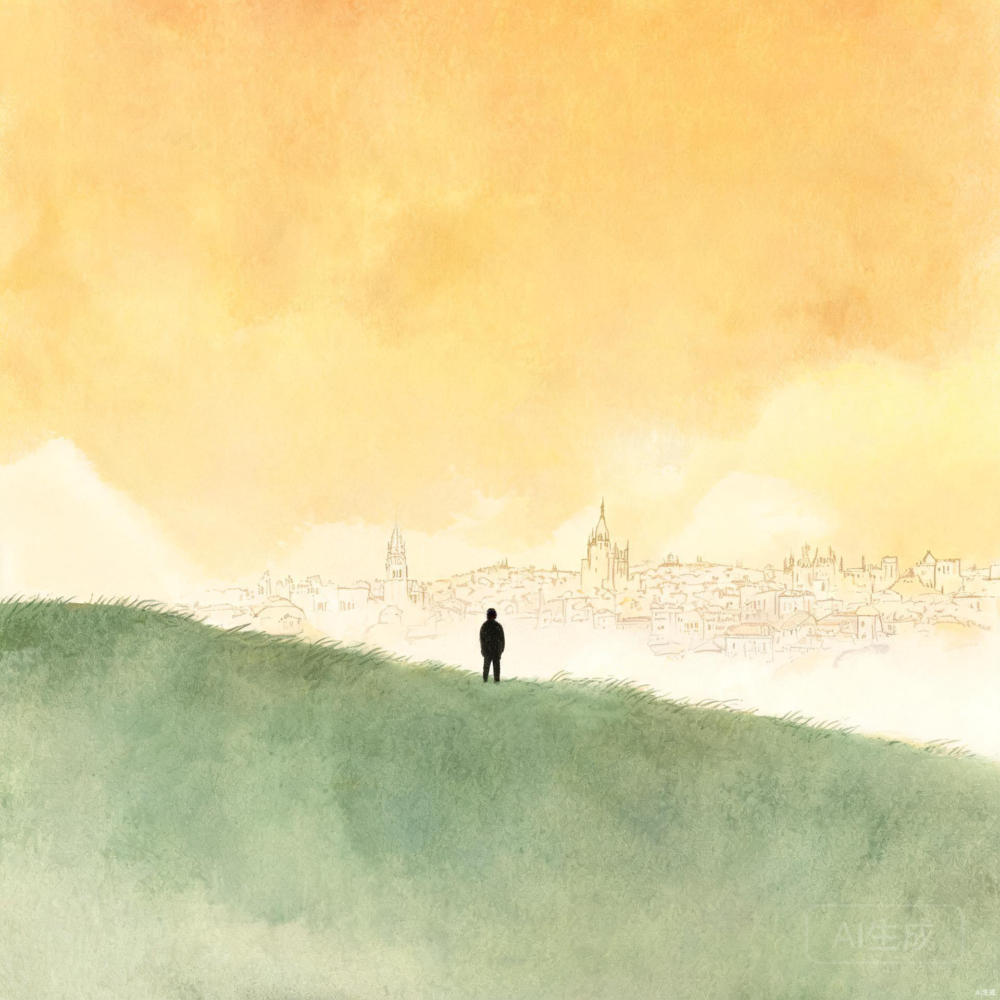
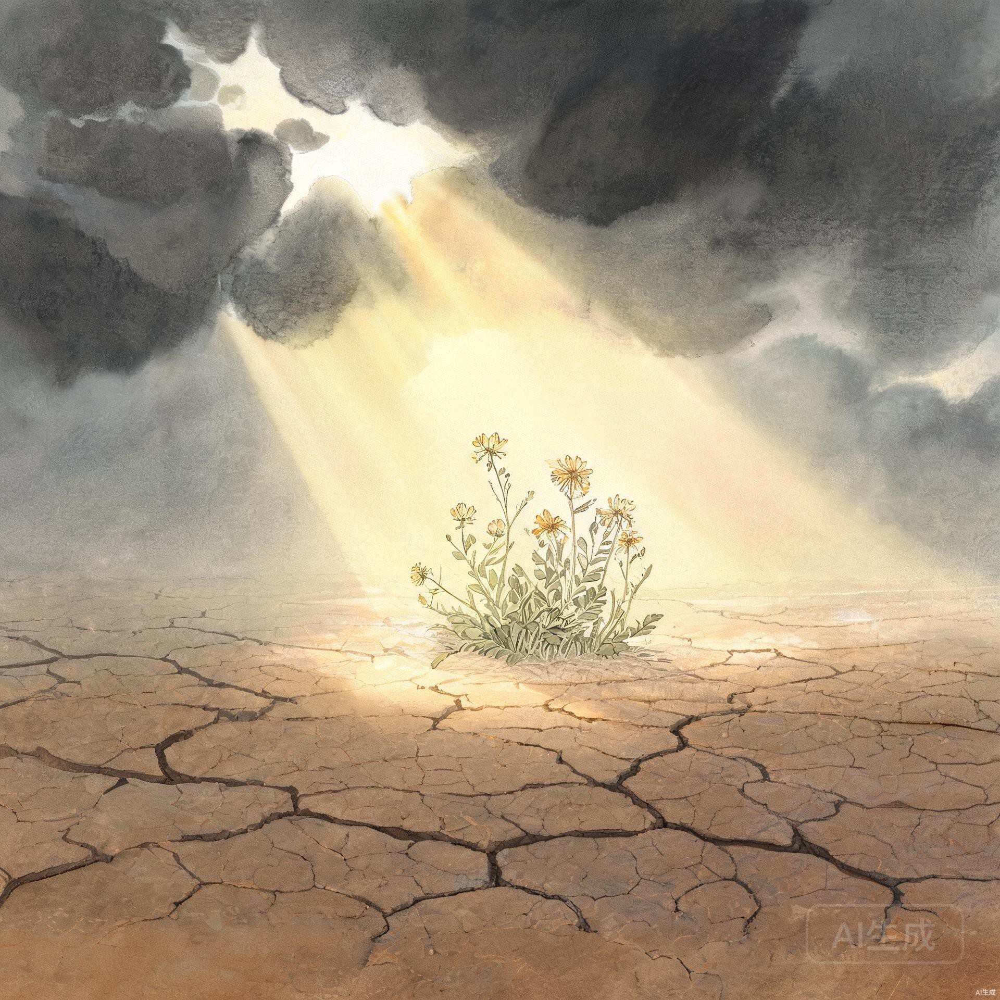
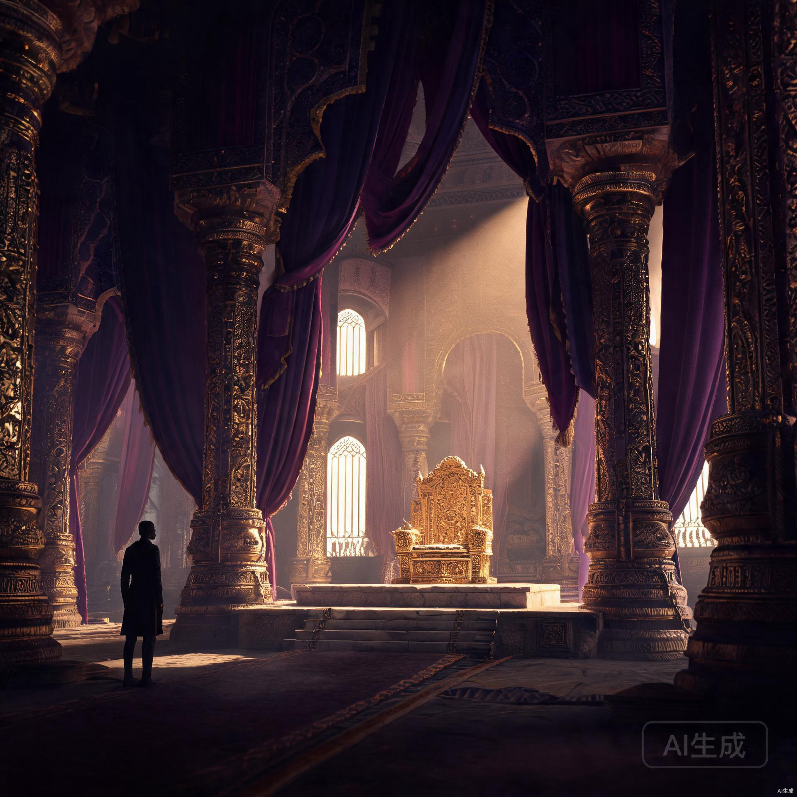
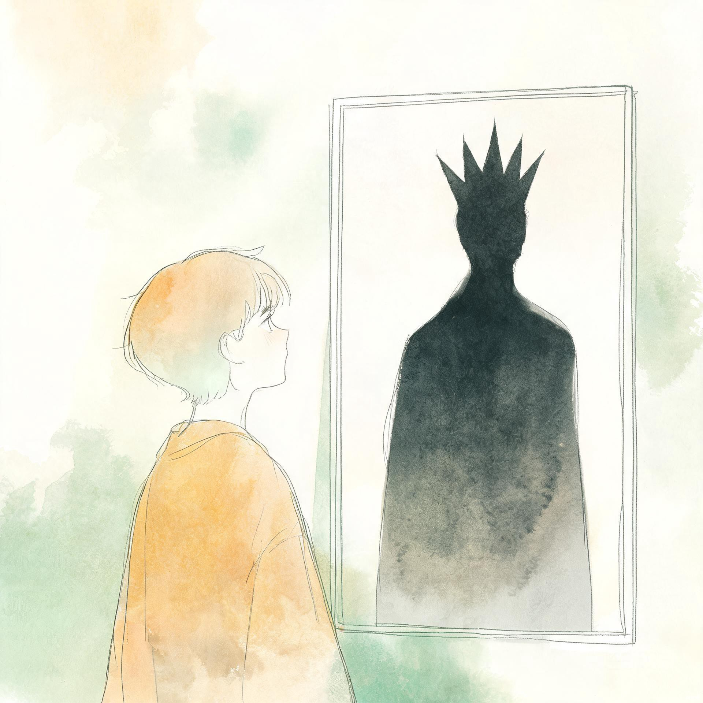
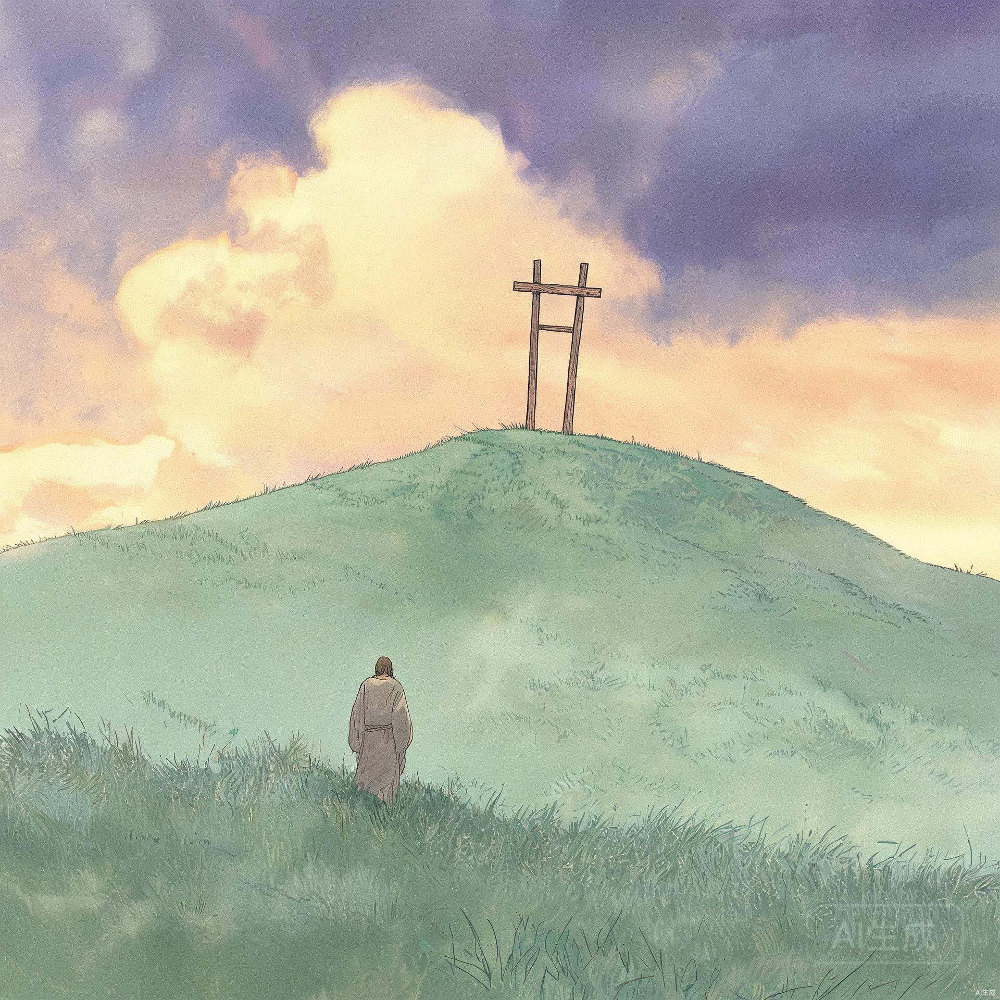
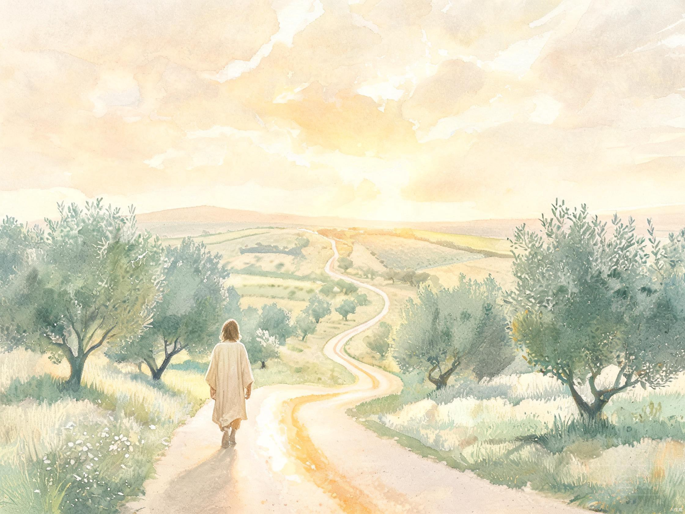
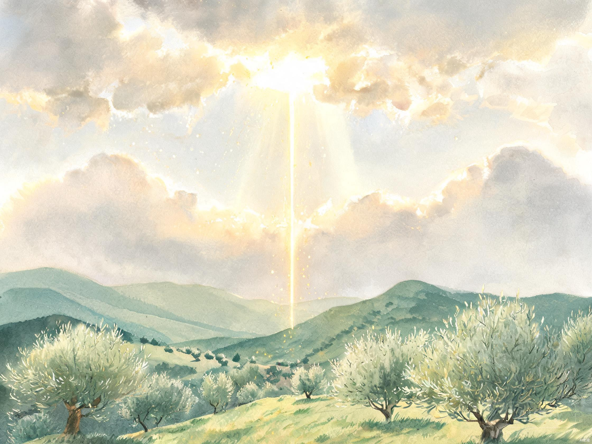
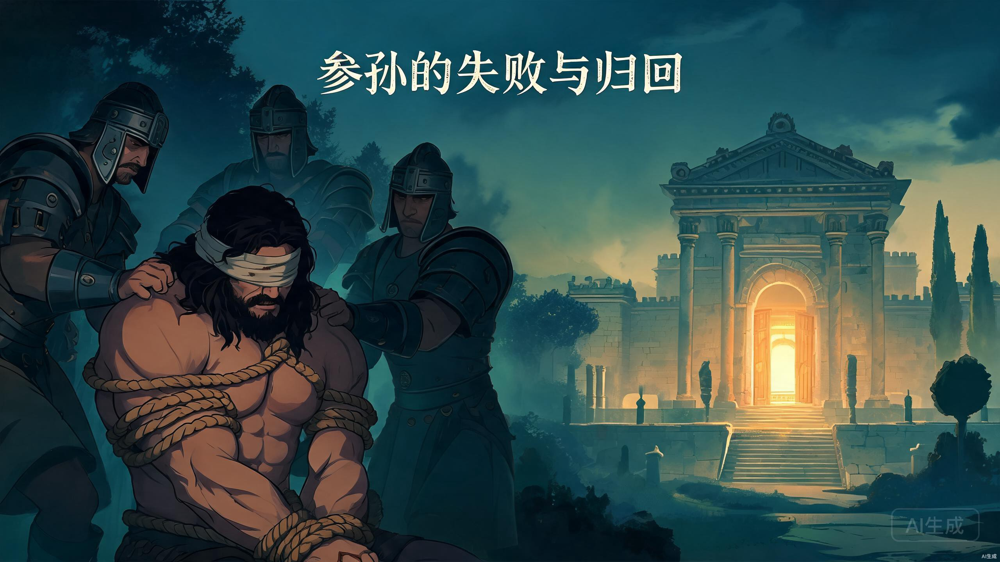
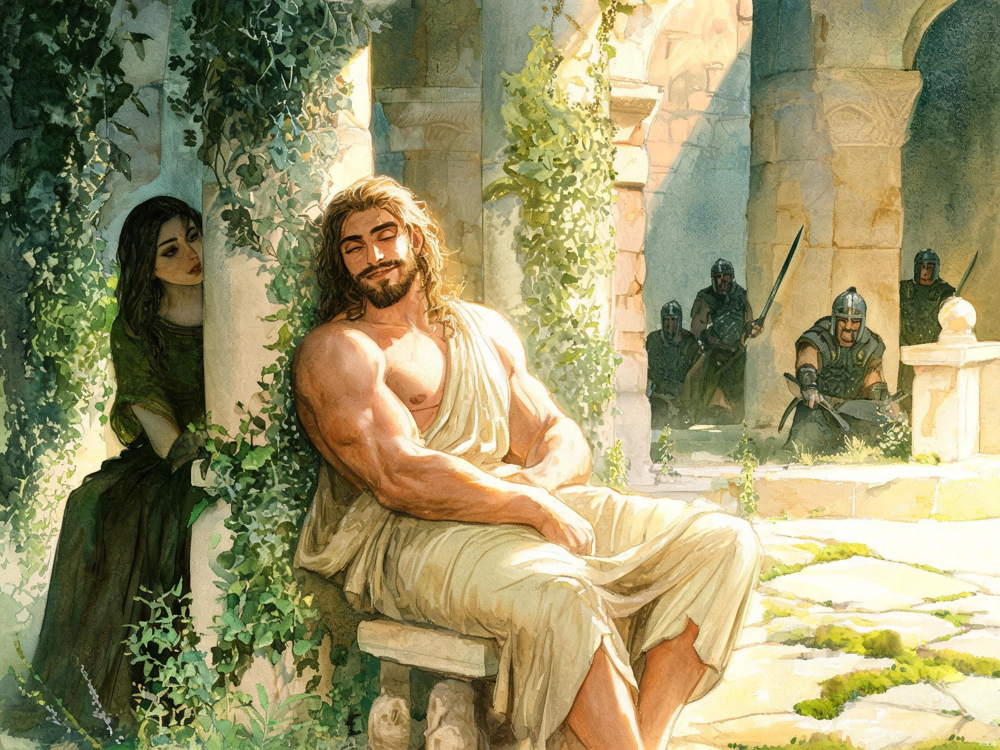

北京青年团契 · 青年基督徒的聚会平台
北京青年团契
扎根真理 · 践行大爱 · 同奔天路
北京青年基督徒的聚会平台，在这里遇见同路人。
向下了解

关于我们
我们是来自三十多个省市、在北京工作的年轻基督徒组成的属灵大家庭。
因着同一位救主相遇，彼此陪伴，共同走信仰的道路。
300+ 成员
30+ 省市
每周活动
音乐会
读书会
查经会
茶话会
运动会
不分宗派，只求在基督里合一；不论背景，只愿在爱中彼此接纳。
有声频道 · 北京青年团契
Audio Channel
圣经人物故事与灵性分享，分模块安静收听。
戴上耳机，让话语先进入耳朵，再进入生命。
<!-- 模块一：圣经故事 -->
<section class="module-panel active" id="module-stories" data-module="stories" role="tabpanel">
<div class="intro-card reveal">亲爱的弟兄姊妹：
你是否曾翻开圣经，却被繁多的章节拦住脚步？其实圣经是由一个个鲜活生命串联起的奇妙故事。
这一次，我们以「人」为钥匙打开理解圣经的大门：
从亚当到挪亚，从亚伯拉罕到摩西，从约瑟到约书亚……
愿你静下心来，聆听每一个生命与真理相遇的时刻。
<div class="playlist-section">
<div class="section-header reveal">
<span class="section-eyebrow">Module 01 · Stories</span>
<h2 class="section-title">圣经人物故事</h2>
<div class="section-divider"></div>
<p class="section-subtitle">点击卡片即可收听；同一时间只会播放一首。</p>
</div>
<div class="track-grid" id="trackGrid"></div>
</div>
</section>
<!-- 模块二：灵性与灵魂 -->
<section class="module-panel" id="module-soul" data-module="soul" role="tabpanel">
<div class="intro-card reveal">灵魂不是一套抽象概念，而是我们在神面前真实的生命状态。
愿这一段分享，帮助你辨认里面的声音，重新把心安放在主里。
<div class="section-header reveal">
<span class="section-eyebrow">Module 02 · Soul</span>
<h2 class="section-title">灵性与灵魂</h2>
<div class="section-divider"></div>
<p class="section-subtitle">安静下来，给自己一段不被打断的时间。</p>
</div>
<div class="soul-shell" id="soulShell">
<div class="soul-art">
<div class="disc" id="disc" aria-hidden="true"></div>
<span class="badge">音频分享</span>
<h3>灵性与灵魂</h3>
<p>在安静中遇见神</p>
</div>
<div class="soul-controls">
<div class="seek-row">
<span id="soulCur">0:00</span>
<input class="seek" id="soulSeek" type="range" min="0" max="1000" value="0" aria-label="播放进度" />
<span id="soulDur">0:00</span>
</div>
<div class="control-row">
<button class="ctrl-btn" id="soulBack" type="button" aria-label="后退15秒">
<svg viewBox="0 0 24 24"><path d="M12 5V1L7 6l5 5V7c3.31 0 6 2.69 6 6s-2.69 6-6 6-6-2.69-6-6H4c0 4.42 3.58 8 8 8s8-3.58 8-8-3.58-8-8-8zm-1.1 11H9.3v-4.5l-1.1.35v-1.1l2-.65h.7V16z"/></svg>
</button>
<button class="ctrl-btn main" id="soulPlay" type="button" aria-label="播放/暂停">
<svg id="soulPlayIcon" viewBox="0 0 24 24"><path d="M8 5v14l11-7z"/></svg>
</button>
<button class="ctrl-btn" id="soulFwd" type="button" aria-label="前进15秒">
<svg viewBox="0 0 24 24"><path d="M12 5V1l5 5-5 5V7c-3.31 0-6 2.69-6 6s2.69 6 6 6 6-2.69 6-6h2c0 4.42-3.58 8-8 8s-8-3.58-8-8 3.58-8 8-8zm1.9 11h-1.7v-4.5l-1.1.35v-1.1l2-.65h.8V16z"/></svg>
</button>
</div>
<p class="status-line" id="soulStatus">点击播放，在网页中收听</p>
</div>
</div>
<div class="soul-tips reveal">
<div class="soul-tip">
<strong>建议场景</strong>
<span>清晨灵修、通勤路上，或睡前安静片刻</span>
</div>
<div class="soul-tip">
<strong>聆听提示</strong>
<span>不必急着做笔记，先让话语在心里停留</span>
</div>
</div>
<div class="soul-verse reveal">
<p>「你们要休息，要知道我是神。」</p>
<cite>—— 诗篇 46:10</cite>
</div>
</section>
<div class="continue-box reveal">
<span class="section-eyebrow">Continue</span>
<h2 class="section-title" style="font-size:1.45rem;margin-top:0.3rem;">继续探索</h2>
<div class="links">
<a href="notes.html">读者笔记 →</a>
<a href="bible-online.html">在线读圣经 →</a>
<a href="../index.html">返回首页 →</a>
</div>
</div>
读者笔记 · 北京青年团契
Reader's Notes
圣经不只是一本供我们阅读的书，更是一面映照生命的镜子。
这里收录读者在神话语光照下的领受、省思与见证，
愿每一篇文字都成为彼此同奔天路的勉励。
"我将你的话藏在心里，免得我得罪你。" —— 诗篇 119:11
读经不只是知识的累积，更是生命与神话语的真实相遇。当我们安静在主面前，圣灵常常借着某一段经文光照我们的内心——有时是安慰，有时是责备，有时是呼召。
读者笔记，正是把这些转瞬即逝的光照记录下来。它不是学术注释，而是一个个普通信徒在真理中被更新的真实见证。约拿在鱼腹中的祷告、哈曼在骄傲中的沉沦、以诺与神同行的三百年、雅各瘸腿中的看见、参孙跌倒后的归回，都不只是古老的故事，更是对我们今日生命的提醒。
愿你在这里找到共鸣，也被激励，在自己的读经旅程中写下属于你的篇章。
📖
"你的言语一解开
就发出亮光
使愚人通达。"
—— 诗篇 119:130
<div class="notes-list">
<!-- 约拿的故事 -->
<a href="./grace_article.html" class="article-card reveal reveal-delay-1">
<div class="article-banner grace">
<span class="float-dot"></span>
<span class="float-dot"></span>
<span class="float-dot"></span>
<div class="banner-icon">
<span class="glyph">Jonah</span>
<span class="glyph-cn">约 拿</span>
</div>
</div>
<div class="article-body">
<div class="article-tags">
<span class="article-tag theme">恩典</span>
<span class="article-tag book">约拿书</span>
</div>
<h3>约拿的故事</h3>
<p class="article-excerpt">
从他施的船票到尼尼微的宣告，从鱼腹中的呼求到蓖麻树下的怒气。约拿的一生是一部恩典的纪录片——神的恩典越过先知的悖逆，也越过仇敌的恶行，到达每一个愿意回转的灵魂。
</p>
<div class="article-footer">
<div class="article-meta">
<span class="meta-item">📜 约拿书 1-4 章</span>
<span class="meta-item">✍️ 恩典专题</span>
</div>
<span class="article-read-btn">阅读全文 →</span>
</div>
</div>
</a>
<!-- 哈曼最大的敌人不是末底改 -->
<a href="./pride_article.html" class="article-card reveal reveal-delay-2">
<div class="article-banner pride">
<span class="float-dot"></span>
<span class="float-dot"></span>
<span class="float-dot"></span>
<div class="banner-icon">
<span class="glyph">Haman</span>
<span class="glyph-cn">哈 曼</span>
</div>
</div>
<div class="article-body">
<div class="article-tags">
<span class="article-tag theme">骄傲</span>
<span class="article-tag book">以斯帖记</span>
</div>
<h3>哈曼最大的敌人不是末底改</h3>
<p class="article-excerpt">
哈曼以为是末底改的不跪不拜毁了他，却不知真正的敌人藏在自己心里。那五丈高的木架，不是为末底改预备的，而是为哈曼自己的骄傲预备的。骄傲在败坏以先，狂心在跌倒之前。
</p>
<div class="article-footer">
<div class="article-meta">
<span class="meta-item">📜 以斯帖记 3-7 章</span>
<span class="meta-item">✍️ 骄傲专题</span>
</div>
<span class="article-read-btn">阅读全文 →</span>
</div>
</div>
</a>
<!-- 以诺与神同行三百年 -->
<a href="./enoch_article.html" class="article-card reveal reveal-delay-3">
<div class="article-banner walk">
<span class="float-dot"></span>
<span class="float-dot"></span>
<span class="float-dot"></span>
<div class="banner-icon">
<span class="glyph">Enoch</span>
<span class="glyph-cn">以 诺</span>
</div>
</div>
<div class="article-body">
<div class="article-tags">
<span class="article-tag theme">同行</span>
<span class="article-tag book">创世记</span>
</div>
<h3>以诺与神同行三百年</h3>
<p class="article-excerpt">
他没有行过惊天动地的神迹，没有率领千军万马，没有写下一卷书。但圣经说，他与神同行三百年，神将他取去，他就不在世了。这是普通人最值得羡慕的人生——与神同行的生命。
</p>
<div class="article-footer">
<div class="article-meta">
<span class="meta-item">📜 创世记 5:21-24</span>
<span class="meta-item">✍️ 同行专题</span>
</div>
<span class="article-read-btn">阅读全文 →</span>
</div>
</div>
</a>
<!-- 雅各的瘸腿 -->
<a href="./jacob_article.html" class="article-card reveal reveal-delay-4">
<div class="article-banner life">
<span class="float-dot"></span>
<span class="float-dot"></span>
<span class="float-dot"></span>
<div class="banner-icon">
<span class="glyph">Jacob</span>
<span class="glyph-cn">雅 各</span>
</div>
</div>
<div class="article-body">
<div class="article-tags">
<span class="article-tag theme">生命</span>
<span class="article-tag book">创世记</span>
</div>
<h3>雅各的瘸腿</h3>
<p class="article-excerpt">
至高者既然要赐福给雅各，为什么还要让他瘸腿？毗努伊勒的那一夜，神没有给新方法，只摸了他的大腿窝。因为真正要处理的，不是外面的难处，是里面那个不肯放下自己的生命。
</p>
<div class="article-footer">
<div class="article-meta">
<span class="meta-item">📜 创世记 32:22-32</span>
<span class="meta-item">✍️ 生命专题</span>
</div>
<span class="article-read-btn">阅读全文 →</span>
</div>
</div>
</a>
<!-- 参孙最大的敌人不是大利拉 -->
<a href="./samson_article.html" class="article-card reveal reveal-delay-5">
<div class="article-banner repent">
<span class="float-dot"></span>
<span class="float-dot"></span>
<span class="float-dot"></span>
<div class="banner-icon">
<span class="glyph">Samson</span>
<span class="glyph-cn">参 孙</span>
</div>
</div>
<div class="article-body">
<div class="article-tags">
<span class="article-tag theme">悔改</span>
<span class="article-tag book">士师记</span>
</div>
<h3>参孙最大的敌人不是大利拉</h3>
<p class="article-excerpt">
罪很少是突然把人拖垮的。第一次妥协还会害怕，第二次就松了，第三次警觉开始变弱。参孙的问题不是从大利拉开始的，她只是把里面早已存在的问题，彻底暴露了出来。
</p>
<div class="article-footer">
<div class="article-meta">
<span class="meta-item">📜 士师记 13-16 章</span>
<span class="meta-item">✍️ 悔改专题</span>
</div>
<span class="article-read-btn">阅读全文 →</span>
</div>
</div>
</a>
</div>
神的话语今日仍然说话。如果你在某段经文中领受了光照、安慰或提醒，
欢迎将它整理成笔记，与更多的弟兄姊妹分享。愿我们一同在真理中被建立。
返回首页探索更多 →
恩典不是我们筛选的
读 者 笔 记
恩典不是我们筛选的
怜悯不在我们手中
—— 约拿的故事里，藏着我们每个人的"不配清单"
为什么有些人蒙怜悯，我们心里反而不舒服？这个问题很扎心，却不得不问。我们嘴上说恩典，心里却藏着一道隐形的"不配清单"——谁伤害过我，谁太虚伪，谁最好别过得太好，心里记得一清二楚。听见那个人倒霉，嘴上不说，心里有一丝痛快；听见那个人被恩待，嘴上说"感谢"，心里却隐隐觉得不公平。
这才是真正的问题：我们不是不知道恩典，我们是不太愿意把恩典分给某些人。
约拿的故事，离我们并不远。他真正的问题，不只是他一开始逃跑，更是后来他坐在城外，等着看尼尼微出事。
你想想这个画面：一个有重托的人，嘴上替生命的主人传话，心里却盼着一座城灭亡。他不是不知道生命的主人有怜悯——恰恰相反，他太知道了，所以他一开始才逃。因为约拿知道，只要尼尼微人悔改，生命的主人很可能就怜悯他们。
<div class="quote-block">
<div class="quote-mark">"</div>
<div class="quote-text">
约拿真正生气的，不是恶没有被处理，而是生命的主人竟然怜悯了他不想怜悯的人。
</div>
</div>

"他不是不知道怜悯，他是不愿意怜悯临到那些人"
尼尼微是一座罪恶深重、残暴凶狠的城。按人的眼光看，他们确实不配。约拿心里的账本大概是这样写的：
<div class="highlight-box">
<p>✦ 这种人<strong class="emphasis">悔改</strong>，我不舒服</p>
<p>✦ 这种人<strong class="emphasis">被赦免</strong>，我接受不了</p>
<p>✦ 这种人还能<strong class="emphasis">被怜悯</strong>，那我受的委屈怎么算？</p>
</div>
<div class="section-body">
<p>有没有那么一个人，你一想到他被恩待，心里就不平？有没有那么一个人，你觉得他受苦才合理，他蒙福就不公平？有没有那么一个人，你嘴上不说，但心里早就判了他"不配"？</p>
<p><strong>这才是问题的核心：我们不是不懂恩典，我们是希望恩典只临到自己喜欢的人。</strong></p>
</div>
恩典如果只给配得的人，那还叫恩典吗？工资是配得的，奖赏是挣来的，可恩典不是。恩典就是给不配的人。若是配得，就不是恩典，是报酬。
<div class="compare-grid">
<div class="compare-card left">
<div class="card-title">报酬</div>
<div class="card-text">按劳分配<br>配得才给<br>努力就能争取</div>
</div>
<div class="compare-card right">
<div class="card-title">恩典</div>
<div class="card-text">白白赐予<br>不配也给<br>无法用行为争取</div>
</div>
</div>
<div class="section-body">
<p>一个人一边说自己是蒙恩的人，一边又在心里说别人不配蒙恩，这里面藏着很深的<strong>骄傲</strong>。这种骄傲不一定很张扬，它不会说"我比别人强"，但它会说：</p>
</div>
<div class="quote-block">
<div class="quote-mark">"</div>
<div class="quote-text">
"我当然知道人需要恩典，但那个人不行。他太过分了。他不配。"
</div>
</div>
<div class="compare-grid">
<div class="compare-card left">
<div class="card-title">我这种罪人</div>
<div class="card-text">可以被怜悯<br>我的错是软弱<br>我需要机会</div>
</div>
<div class="compare-card right">
<div class="card-title">他那种罪人</div>
<div class="card-text">就该被清算<br>他的错是活该<br>他不配有机会</div>
</div>
</div>
<div class="section-body">
<p>这不就是我们里面那个<strong>小小的审判台</strong>吗？我们希望生命的主人对自己有耐心，却希望他对别人快点出手；希望自己有悔改的机会，却不愿给别人悔改的空间；希望自己的软弱被理解，却希望别人的失败被定罪。</p>
</div>
生命的主人问约拿："你这样发怒合乎理吗？"这句话不只是问约拿，也是问我们。
你恨那个人，也许有原因；你受过伤，也许是真的；你看见恶，也许不是错觉。可问题是——
<div class="question-list">
<div class="question-item">你是在恨恶罪，还是在享受恨人的快感？</div>
<div class="question-item">你是在盼望公义，还是在盼望对方灭亡？</div>
<div class="question-item">你是在求生命的主人处理罪，还是在求他配合你的报复心？</div>
</div>
<div class="section-body">
<p>这几个问题，一问就露馅。我们说"他应该受报应"，其实心里想的是"他终于也该痛苦一下了"。我们说"这种人不配被原谅"，其实心里想的是"我不想看见他被恩待"。</p>
</div>

"恩典就是给不配的人，包括我，包括你，也包括那个你心里觉得不配的人"
这不是说恶不严重。罪就是罪，伤害就是伤害，该承担后果的仍要承担。真理从来不是让我们对恶装瞎，也不是让受伤的人假装没事。
我们可以设立边界，可以远离伤害，可以把罪交给合适的秩序处理——但我们不能坐在生命的主人的位置上，说：
<div class="quote-block">
<div class="quote-mark">"</div>
<div class="quote-text">
这个人永远不配被怜悯。
</div>
</div>
<div class="section-body">
<p>因为一旦我们这样说，就说明我们<strong>忘了自己也是被怜悯的人。</strong></p>
<p>真正认识恩典的人，不是看不见别人的恶，而是不敢忘记自己的恶；不是对罪没有立场，而是不敢把自己装成无罪的审判官；不是所有事都算了，而是<strong>把报复的权柄交还给生命的主人。</strong></p>
</div>
他说：他愿意恩待谁，就恩待谁；他愿意怜悯谁，就怜悯谁。这不是在说生命的主人随便做事，而是在说，恩典不是人可以操控的东西。
怜悯不是我表现好争来的，也不是别人坏一点就自动失去的。恩典的根源，不在人的资格里，而在生命的主人的怜悯里。
<div class="highlight-box">
<p>✦ 它救我，也可能救我不喜欢的人</p>
<p>✦ 它临到我，也可能临到我觉得不配的人</p>
<p>✦ 如果恩典只给配得的人，<strong class="emphasis">那我们所有人都没份</strong></p>
<p>✦ 包括我，包括你，也包括那个你心里觉得不配的人</p>
</div>
<div class="section-body">
<p>所以，不要替生命的主人筛选谁可以被怜悯。我们能做的，是恨恶罪，却不抢夺审判的位置；守住边界，却不喂养报复的心；承认伤害，却把最终的主权交还给他。</p>
</div>
他愿意恩待谁，就恩待谁
他愿意怜悯谁，就怜悯谁
—— 出埃及记 33:19
哈曼最大的敌人，不是末底改

读 者 笔 记
哈曼最大的敌人
不是末底改
—— 毁掉一个人的，从来不是外面的仇敌
如果问你，哈曼最大的敌人是谁？很多人都会回答：末底改。因为就是这个人，不向哈曼下拜；也是因为这个人，哈曼最后走向灭亡。可如果仔细读以斯帖记，你会发现：末底改从来没有主动攻击哈曼——所以，末底改不是哈曼最大的敌人。
那哈曼为什么非要杀了末底改呢？答案藏在他心里。
你看，末底改他没有抢哈曼的位置，没有煽动百姓反对哈曼，也没有设计陷害哈曼。他只是坚持一件事——就是不向人下拜。
确切来说，真正让哈曼痛苦的，不是末底改做了什么，而是末底改没有做什么。
<div class="quote-block">
<div class="quote-mark">"</div>
<div class="quote-text">
他没有给哈曼想要的尊荣。
</div>
</div>

"真正折磨哈曼的，不是末底改，而是他里面的骄傲"
<div class="quote-block">
<div class="quote-mark">"</div>
<div class="quote-text">
只是我见犹大人末底改坐在朝门，虽有这一切荣耀，也与我无益。
</div>
</div>
<div class="section-body">
<p>那时候的哈曼是谁呀？他已经拥有了很多人一辈子都得不到的东西：</p>
</div>
<div class="highlight-box">
<p>✦ 位高权重，<strong class="emphasis">一人之下，万人之上</strong></p>
<p>✦ 拥有财富、儿女、权势和名望</p>
<p>✦ 连王后设宴，都只邀请王和哈曼两个人</p>
</div>
<div class="section-body">
<p>按人的标准，他已经站在人生的巅峰。可这一切，却因为一个不肯向他下拜的人，他觉得变得<strong>"毫无意义"</strong>。</p>
</div>
为什么？因为真正控制哈曼的，从来不是末底改。而是他里面那个永远想被人高举、永远想被人尊崇的骄傲。
我们都知道，骄傲有一个特点：
<div class="highlight-box">
<p>✦ 它<strong class="emphasis">永远不会满足</strong></p>
<p>✦ 今天希望十个人夸奖，明天希望一百个人称赞</p>
<p>✦ 今天希望别人尊重，明天又希望所有人都顺服</p>
<p>✦ 哪怕全世界的人都向他低头，只要还有一个人没有，他心里就不得安宁</p>
</div>
<div class="section-body">
<p>所以，真正折磨哈曼的，不是末底改。而是他里面那个不断喊着：<strong>"为什么还有人不尊重我？"</strong></p>
</div>
后来，哈曼甚至不是想杀末底改一个人。他要灭掉整个犹太民族。为什么？
因为当骄傲受到挑战时，罪不会停留在一点，而会不断膨胀：
<div class="stair-box">
<div class="stair-item">今天只是 <strong>恨一个人</strong></div>
<div class="stair-item">明天可能就会 <strong>恨一群人</strong></div>
<div class="stair-item">今天只是 <strong>想争一口气</strong><br>明天可能就会 <strong>不惜代价毁掉别人</strong></div>
</div>
<div class="section-body">
<p>这就是罪的发展。骄傲一旦被喂养，它从不会自己停下来，只会越来越大，直到吞噬一切。</p>
</div>

"为别人预备的木架，最后挂上了自己"
最讽刺的是，哈曼亲手预备了一座高高的木架。原本是为了挂末底改。
<div class="quote-block">
<div class="quote-mark">"</div>
<div class="quote-text">
最后，被挂上去的，却是他自己。
</div>
</div>
<div class="section-body">
<p>所以，家人们，毁掉哈曼的，不是末底改呀。是他里面那个一直不肯放下的<strong>骄傲</strong>。</p>
<p>骄傲最可怕的地方在于：它让你以为自己在对付别人，其实它一直在掏空你自己。你为别人预备的坑，最后往往成了自己的坟墓。</p>
</div>
要知道，一个人若把自己的价值，建立在别人的认可上，他这一生就注定不会平安。
因为——
<div class="highlight-box">
<p>✦ <strong class="emphasis">总有人不喜欢你</strong></p>
<p>✦ <strong class="emphasis">总有人不同意你</strong></p>
<p>✦ <strong class="emphasis">总有人不会按着你的期待回应你</strong></p>
</div>
<div class="section-body">
<p>如果我们的喜乐，需要所有人都认可；我们的平安，需要所有人都尊重；我们的价值，需要所有人为我们鼓掌——</p>
<p>那么我们早已把自己的心，<strong>交给了别人来掌管。</strong></p>
</div>
<div class="compare-grid">
<div class="compare-card left">
<div class="card-title">被别人掌管的心</div>
<div class="card-text">靠称赞活着<br>怕被忽视<br>一点冷落就崩塌</div>
</div>
<div class="compare-card right">
<div class="card-title">真正的自由</div>
<div class="card-text">即使不被认可<br>里面仍然安稳<br>价值不由人定</div>
</div>
</div>
真正的自由，不是人人都高看你，而是即使有人不认可你，你里面仍然安稳。
因为你的价值，不是别人决定的；你的身份，也不是人的评价决定的。
<div class="quote-block">
<div class="quote-mark">"</div>
<div class="quote-text">
哈曼最大的敌人，不是末底改，而是那个永远觉得自己还不够被尊重的自己。
</div>
</div>
<div class="section-body">
<p contenteditable="false" style="">所以，我们要时刻警醒。因为很多时候，真正毁掉一个人的，不是外面的仇敌，而是里面那个<strong>始终不肯降卑的心。</strong></p>
</div>
骄傲在败坏以先
狂心在跌倒之前
—— 箴言 16:18
以诺与神同行三百年
读 者 笔 记
以诺与神同行三百年
普通人最值得羡慕的人生
—— 一个没有神迹、没有伟绩、没有战场的人，却收获了神最大的喜悦
开篇 · 羡慕的人生
翻开圣经的家谱，你会发现一个奇特的人。他没有行过惊天动地的神迹，没有率领千军万马，没有写下一卷书，甚至连一句流传千古的名言都没有留下。
他的名字叫以诺。
创世记第五章，从亚当到挪亚，整整十代人，每个人的记载几乎都是同一种格式：「活到多少岁，生了一个儿子，又活了多少年，并且生儿养女，共活了多少岁就死了。」
单调、重复、带着一种宿命般的沉重——人，生来就是走向死亡。
直到以诺出现。圣经在他的身上，打破了整章的句式。
<div class="quote-block">
<div class="quote-mark">"</div>
<div class="quote-text">
以诺活到六十五岁，生了玛土撒拉。以诺生玛土撒拉之后，与神同行三百年，并且生儿养女。以诺共活了三百六十五岁。以诺与神同行，神将他取去，他就不在世了。
</div>
<div class="quote-attribution">—— 创世记 5:21-24</div>
</div>
<div class="section-body">
<p>发现了吗？在所有人的故事都以「就死了」三个字结束的时候，以诺的故事结尾是：</p>
<p><strong>「神将他取去，他就不在世了。」</strong></p>
<p>这是整本圣经里最令人羡慕的结局之一。不是轰轰烈烈的升天，不是光芒万丈的荣耀，只是一句平平淡淡的「神将他取去」——好像一个人走着走着，就和神一起回家了。</p>
<p>而这一切的原因，圣经只给出了一个理由：<strong>与神同行。</strong></p>
</div>

与神同行的路，不在高处，在每一个平凡的日子里
我们很容易把「与神同行」想象成一种很属灵、很神秘的状态——好像每天都要祷告几个小时，要读很多圣经，要做很多善事，要达到某种很高的属灵境界。
但让我们仔细看看以诺的人生：
<div class="highlight-box">
<p><span class="emphasis">他生了玛土撒拉</span>——他是一个父亲，要养家糊口，要教导孩子，要承担家庭的责任。</p>
<p><span class="emphasis">他并且生儿养女</span>——他不只有一个孩子，还有其他的儿女。他的生活里有尿布、有哭闹、有柴米油盐、有孩子之间的争吵。</p>
<p><span class="emphasis">他活了三百六十五岁</span>——他的一生很长，但不是三百六十五天都在「做属灵的事」。</p>
</div>
<p>「与神同行」的意思，不是脱离现实生活，飘到天上；而是在现实生活的每一步里，都有神同在。</p>
<p>它不是一种特殊的经历，而是一种持续的状态。不是某一天你突然「达到」了，而是每一天，你都选择和他一起走。</p>
</div>
我以前读这段经文，总是被「神将他取去」这个结尾吸引。
但后来我慢慢发现，真正了不起的不是那个结尾，而是中间那三个字：三百年。
一年两年的热心，很多人都有；十年八年的坚持，已经不容易；但三百年的同行——这是什么样的生命？
<div class="compare-grid">
<div class="compare-card left">
<div class="card-icon">⚡</div>
<div class="card-title">激情式的信仰</div>
<div class="card-text">高峰时火热<br>低谷时失落<br>靠感觉维持</div>
</div>
<div class="compare-card right">
<div class="card-icon">🚶</div>
<div class="card-title">同行式的信仰</div>
<div class="card-text">平淡中持续<br>平凡中坚定<br>靠信靠维持</div>
</div>
</div>
<div class="section-body">
<p>我们的信仰很容易变成过山车——有时候特别火热，有时候又冷淡退后。我们追求各种特别的经历、感动、恩膏，却忽略了最朴素的那一件事：<strong>每天和他一起走。</strong></p>
<p>以诺的生命没有大起大落，没有惊心动魄的故事，他就是简简单单地，和神走了一年又一年，一代又一代。</p>
<p>这才是真正的坚忍。这才是神所喜悦的生命。</p>
</div>
</div>
以诺最安慰我的地方，是他的普通。
圣经里有很多伟人：摩西分海、大卫王、所罗门的智慧、保罗的传道旅程……他们的人生太辉煌了，我常常觉得自己这辈子都达不到。
但以诺不一样。他就是一个普通人——
<div class="question-list">
<div class="question-item">他没有领受过什么特别的使命，只是和神一起走</div>
<div class="question-item">他没有什么伟大的成就，只是好好地过日子</div>
<div class="question-item">他没有说过什么名言，只是安静地信靠</div>
<div class="question-item">他甚至没有经历过死亡，只是被神温柔地「取去」</div>
</div>
<p style="margin-top: 20px;">这就是为什么我说，以诺的人生是普通人最值得羡慕的人生。</p>
<p>因为他的人生告诉我们：<strong>不是只有做大事的人才被神纪念；一个普通的人，只要好好地和神同行，就能得着神最大的喜悦。</strong></p>
</div>
「同行」这个词很有意思。它不是说你要走得多快，也不是说你要走得多远，而是说——你和谁一起走。
两个人同行，意味着：
<div class="highlight-box">
<p><span class="emphasis">步伐一致</span>——你不赶他，他也不落下你。他的速度就是你的速度。</p>
<p><span class="emphasis">方向相同</span>——他往哪里去，你也往哪里去。他的方向就是你的方向。</p>
<p><span class="emphasis">时常交谈</span>——走着走着，你跟他说话，他也跟你说话。不是单向的祷告，是双向的同行。</p>
</div>
<p>我们常常担心自己「不够属灵」，担心自己的祷告不够长、读经不够多、事奉不够火热。但以诺的故事告诉我们：神要的不是你的「多」，而是你的「同在」。</p>
<p>就像两个相爱的人散步，重要的不是走了多少公里，而是身边那个人是谁。</p>
</div>

与神同行的终点，是永远与他同在
新约希伯来书第十一章，就是那著名的「信心名人榜」，第一个被提到的旧约人物，就是以诺。
<div class="quote-block">
<div class="quote-mark">"</div>
<div class="quote-text">
人非有信，就不能得神的喜悦；因为到神面前来的人必须信有神，且信他赏赐那寻求他的人。以诺因着信，被接去，不至于见死，人也找不着他，因为神已经把他接去了。只是他被接去以先，已经得了神喜悦他的明证。
</div>
<div class="quote-attribution">—— 希伯来书 11:6-5</div>
</div>
<p>注意这句话：<strong>「得了神喜悦他的明证。」</strong></p>
<p>不是他证明了自己有多爱神，而是神证明了——这个人，是我所喜悦的。</p>
<p>这是一个人能得着的最高认证。不是人的称赞，不是教会的头衔，不是事工的果效，而是从神而来的一句：<strong>「这是我的爱子，我所喜悦的。」</strong></p>
<p>以诺得到了。不是因为他做了什么了不起的事，只是因为他信，并且他同行。</p>
</div>
也许你今天正处在一种属灵的疲惫里。
也许你觉得自己的信仰不冷不热，好像离神很远。也许你羡慕别人的属灵经历，却不知道自己该从哪里开始。
以诺的故事给了我们一个最简单的答案：
<div class="highlight-box">
<p><span class="emphasis">不需要大的改变</span>，只要从今天开始，把每一步都和他连在一起。</p>
<p><span class="emphasis">不需要特别的感动</span>，只要选择相信他就在你身边，和你一起走。</p>
<p><span class="emphasis">不需要完美的表现</span>，只要持续地、日复一日地，把你的人生交在他手里。</p>
</div>
<p>「与神同行」不是一个将来要达到的目标，而是一个现在就可以开始的动作。</p>
<p>就在此刻，你可以在心里对他说：「主啊，今天我也想和你一起走。」</p>
<p>这就是同行的开始。这就是以诺人生的起点。</p>
<p>而谁知道呢——也许三百年后（或者说，在永恒里），你也会听见他对你说：</p>
<p><strong>「你这又良善又忠心的仆人，进来享受你主人的快乐吧。」</strong></p>
</div>
与神同行的人
必不至于见死，人也找不着他
因为神已经把他接去了
—— 希伯来书 11:5
雅各的瘸腿——为什么神赐福，却留下软弱
读 者 笔 记
雅各的瘸腿
为什么神赐福，却留下软弱
—— 毗努伊勒的那一夜，他失去了腿上的力量，却遇见了真正的生命
开篇 · 一个令人困惑的问题
雅各一生中，最特别的一件事，不只是他改了名字，而是他从那一夜以后，留下了一条瘸腿。
很多人会问：至高者既然要赐福给雅各，为什么还要让他瘸腿？
难道不能既赐福给他，又让他完完整整地离开吗？
要回答这个问题，就要先看雅各是一个怎样的人。就要回到毗努伊勒的那个夜晚，看看生命的主人到底在做什么。
雅各从年轻时开始，就是一个很会想办法的人。
为了长子的名分，他会计划；为了父亲的祝福，他会筹算；到了拉班家，他也懂得怎样经营羊群；后来准备回去见以扫时，他又安排礼物、安排队伍、安排家人前后的顺序，希望把危险降到最低。
可以说，雅各一生都在想办法解决问题。
<div class="quote-block">
<div class="quote-mark">"</div>
<div class="quote-text">
他不是完全不相信至高者，而是太习惯先相信自己的聪明。<br>
他会祈祷，也会筹算；会求帮助，也会给自己留后路。
</div>
</div>
<p>这正是雅各里面很深的问题。他知道至高者有能力，却仍然觉得，最后还得靠自己把事情办稳。</p>
<p>祷告是一回事，筹算是另一回事。求祝福是一回事，自己伸手去抓又是另一回事。</p>
<p>这样的雅各，像不像我们中的许多人？</p>
</div>
从依靠自己的腿，到依靠神的手——每一步都是新的学习
直到毗努伊勒的那一夜，一切都改变了。
那一夜，有一个人来和雅各摔跤，直到黎明。那人见自己胜不过他，就摸了雅各的大腿窝——雅各的大腿窝正在摔跤的时候就扭了。
<div class="quote-block">
<div class="quote-mark">"</div>
<div class="quote-text">
那人说：「你的名不要再叫雅各，要叫以色列，因为你与神与人较力，都得了胜。」<br>
雅各便给那地方起名叫毗努伊勒，意思说：「我面对面见了神，我的性命仍得保全。」<br>
日头刚出来的时候，雅各经过毗努伊勒，他的大腿就瘸了。
</div>
<div class="quote-attribution">—— 创世记 32:28-31</div>
</div>
<p>你发现了吗？那一夜，至高者没有教雅各新的方法，没有给他新的策略，也没有告诉他怎样说服以扫。</p>
<p>他只是摸了雅各的大腿窝。</p>
<p><strong>雅各就瘸了。</strong></p>
</div>
为什么？为什么神要让雅各瘸腿？
因为生命的主人真正要处理的，不只是雅各外面的难处，更是他里面那个始终不肯放下自己的生命。
<div class="compare-grid">
<div class="compare-card left">
<div class="card-icon">⚔️</div>
<div class="card-title">雅各以为的危险</div>
<div class="card-text">是以扫的仇恨<br>是眼前的困境<br>需要更多筹算</div>
</div>
<div class="compare-card right">
<div class="card-icon">💡</div>
<div class="card-title">神眼中的危险</div>
<div class="card-text">是活在自己的聪明里<br>是对自己的依靠<br>需要被触摸、被拆毁</div>
</div>
</div>
<div class="section-body">
<p>雅各一直以为，自己最大的危险是以扫。</p>
<p>可在至高者眼中，雅各更深的危险，是他一直活在自己的聪明、筹算和掌控里。</p>
<p>如果只是改变以扫，却不改变雅各，那么眼前的问题虽然解决了，雅各里面那个不断依靠自己的人，仍然没有被触动。下一次遇到风浪，他还是会回到老路上——靠自己的头脑，靠自己的手段，靠自己的腿。</p>
<div class="highlight-box">
<p><span class="emphasis">所以那一夜，生命的主人没有先给雅各更多能力</span>，反而让他失去原本可以倚靠的力量。</p>
<p>这不是因为瘸腿本身有什么功劳，也不是说人越软弱就越属灵。真正的问题是——雅各需要明白：保护他的，不是他的腿，不是他的计划，也不是他的办法，而是至高者的怜悯。</p>
</div>
</div>
</div>
还有一个细节，非常值得思想。
雅各瘸腿以后，第二天就要去见以扫。
按人的想法，这不是更危险了吗？以前还能跑，瘸腿以后，连逃跑都困难了。
可是，正当雅各不能再像从前那样倚靠自己时，至高者已经在前面动工。
<div class="quote-block">
<div class="quote-mark">"</div>
<div class="quote-text">
以扫迎着他跑来，抱住他，又搂着他的颈项，与他亲嘴，两个人就哭了。
</div>
<div class="quote-attribution">—— 创世记 33:4</div>
</div>
<p>原本让雅各惧怕的相见，最后却变成兄弟相拥。</p>
<p>雅各准备了很多礼物，也作了很多安排。但真正改变以扫的，不是雅各的筹算，而是至高者的保守。</p>
<p>这件事要让雅各明白：</p>
<div class="highlight-box">
<p><span class="emphasis">不是因为你计划得周全，所以你平安；</span></p>
<p><span class="emphasis">而是因为生命的主人施恩，你才能平安。</span></p>
</div>
</div>
我相信，从那一天开始，雅各每走一步，都会记得那一夜。
他的瘸腿，成了一个一生都带着的记号。
这个记号不断提醒他：
<div class="question-list">
<div class="question-item">你不是靠自己走到今天的</div>
<div class="question-item">你的聪明不能救你，你的手段不能托住你</div>
<div class="question-item">真正保护你的，是那一位愿意向你施怜悯的神</div>
<div class="question-item">每一步能走下去，都不是理所当然，都是恩典</div>
</div>
<p style="margin-top: 20px;">以前，雅各总觉得自己还有办法。</p>
<p>后来，他慢慢明白，真正托住他的，不是自己的聪明，而是至高者的信实。</p>
<p>那条瘸腿，成了他生命中最宝贵的礼物。因为它让雅各学会了一种过去不会的走路方式——</p>
<p><strong>从前，他靠自己走；后来，他只能一步一步倚靠至高者。</strong></p>
</div>
家人们，我们也常常和雅各一样。
我们遇到问题，第一反应就是计算、安排、推演、控制。我们并不是完全不祈祷，只是常常把祈祷放在最后，把自己放在前面。
我们嘴上说倚靠生命的主人，心里却仍然觉得：
<div class="highlight-box">
<p>「我只要再聪明一点，再周全一点，再努力一点，就能把一切稳住。」</p>
</div>
<p>可人最大的错觉，就是以为自己能够掌控结果。</p>
<p>生命的主人有时不会立刻拿走人的软弱。不是因为他喜欢看人受苦，而是因为有些软弱，会不断提醒我们：<strong>我们不是自己的主人，也不是环境的主人。</strong></p>
<div class="compare-grid">
<div class="compare-card left">
<div class="card-icon">⚠️</div>
<div class="card-title">真正的危险</div>
<div class="card-text">不是身上有软弱<br>而是一直觉得<br>自己不需要恩典</div>
</div>
<div class="compare-card right">
<div class="card-icon">🤲</div>
<div class="card-title">真正的保护</div>
<div class="card-text">是那一点有限<br>提醒我们回转<br>回到恩典里</div>
</div>
</div>
<div class="section-body">
<p>有时，生命的主人没有立刻拿走我们的软弱，是因为他知道，那一点始终存在的有限，反而能保护我们，不再回到骄傲、自恃和掌控里面。</p>
</div>
</div>
所以，雅各那一夜失去的，不只是腿上的力量。
他真正失去的，是那个一直以为「我还能靠自己」的自己。
而他得着的，是一个新的名字——以色列，一个新的生命，一个真正与神同行的人生。
<div class="quote-block">
<div class="quote-mark">"</div>
<div class="quote-text">
瘸腿不是雅各一生最大的损失。<br>
继续倚靠自己，才是他一生更大的危险。
</div>
</div>
<p>亲爱的朋友，也许你今天也在面对一些软弱、一些限制、一些你怎么努力都改变不了的事。</p>
<p>不要急着求神把它挪去。也许那正是他用来保护你的记号——让你不再靠自己的腿奔走，而是学会靠他的恩典站立。</p>
<p>愿我们都能像雅各一样，经过毗努伊勒的夜晚，带着那条瘸腿，却走出一条<strong>真正蒙福的路</strong>。</p>
</div>
他对我说：
「你的名不要再叫雅各，要叫以色列」
因为你与神与人较力，都得了胜
—— 创世记 32:28
参孙最大的敌人不是大利拉——罪是怎么一步步拖垮一个人的

读 者 笔 记
参孙最大的敌人不是大利拉
罪是怎么一步步拖垮一个人的
—— 从亭拿到迦萨，从迦萨到梭烈谷，罪不是突然来的，是一次次妥协堆出来的
开篇 · 一个常见的误解
提到参孙，我相信不少人的第一反应就是：都是大利拉害了他。
他们会说，如果没有大利拉，参孙就不会失去力量；如果没有大利拉，他就不会被非利士人抓住；如果没有大利拉，他最后也不会落到那样悲惨的地步。
可问题是：如果没有大利拉，参孙真的就不会跌倒吗？
恐怕不是。
因为参孙的问题，并不是从大利拉开始的。大利拉只是把他里面早已存在的问题，彻底暴露了出来。
参孙从出生以前，就被分别出来。他得着了特别的恩赐，也承担着特别的使命。
可他的生命有一个长期没有认真对付的问题，就是他太习惯按自己的眼目和喜好作选择。
<div class="quote-block">
<div class="quote-mark">"</div>
<div class="quote-text">
参孙到了亭拿，看见一个非利士女子，就回来对父母说，要他们把那女子娶来给他。<br>
父母劝他，为什么偏偏要从非利士人中娶妻？<br>
可参孙的回答很直接：<strong>她在我眼中看为正。</strong>
</div>
<div class="quote-attribution">—— 士师记 14:1-3</div>
</div>
<p>注意，他问的不是：<strong>「这是不是生命的主人所喜悦的？」</strong></p>
<p>他在意的是：<strong>「我喜欢不喜欢，我看着合不合适。」</strong></p>
<p>这几乎成了参孙一生很深的模式：眼目走在顺服前面，感觉压过了敬畏，喜好代替了真理。</p>
<p>后来，他又去了迦萨，看见一个妓女，就进去亲近她。再后来，才遇见大利拉。</p>
<div class="highlight-box">
<p><span class="emphasis">所以，大利拉并不是参孙生命中的第一次危险</span>，她只是前面一次次放纵不断累积之后，出现的最后一个网罗。</p>
</div>
</div>

罪很少突然把人拖垮，它是一步步、一次次妥协，慢慢织成一张网
罪很少是突然把一个人拖垮的。
更多时候，它有一个缓慢的、几乎不易察觉的过程：
<div class="step-list">
<div class="step-item">
<div class="step-num">1</div>
<div class="step-content">
<strong>第一次妥协时</strong>，人还会害怕，里面还有警觉，还会自责
</div>
</div>
<div class="step-item">
<div class="step-num">2</div>
<div class="step-content">
<strong>第二次妥协时</strong>，发现好像也没有立刻出事，心里的紧张就松了一点
</div>
</div>
<div class="step-item">
<div class="step-num">3</div>
<div class="step-content">
<strong>第三次妥协时</strong>，里面的警觉开始变弱，甚至会给自己找借口
</div>
</div>
<div class="step-item">
<div class="step-num">4</div>
<div class="step-content">
<strong>慢慢地</strong>，人会产生一种可怕的错觉：我可以靠近罪，却不会被罪吞掉
</div>
</div>
</div>
<p>参孙就是这样。</p>
<p>他一次次越过界限，却没有立刻失去力量。于是，他便越来越相信，不是生命的主人托住他，而是他自己本来就有能力。</p>
<div class="compare-grid">
<div class="compare-card left">
<div class="card-icon">⚠️</div>
<div class="card-title">真相</div>
<div class="card-text">没有立刻受管教<br>不等于罪没有后果<br>不等于神认可</div>
</div>
<div class="compare-card right">
<div class="card-icon">💀</div>
<div class="card-title">错觉</div>
<div class="card-text">我可以靠近罪<br>却不会被罪吞掉<br>我能掌控边界</div>
</div>
</div>
</div>
这正是恩赐很容易带给人的危险。
当一个人长期被使用，却没有认真对付里面的罪，他就可能——
<div class="question-list">
<div class="question-item">把恩典误认为自己的本事</div>
<div class="question-item">把托付误认为自己的资本</div>
<div class="question-item">觉得「我虽然生活混乱，但能力还在」</div>
<div class="question-item">觉得「既然能力还在，就说明问题不大」</div>
</div>
<p style="margin-top: 20px;">可能力仍然存在，不等于生命的主人认可人的道路。</p>
<p>没有立刻受管教，也不等于罪没有后果。</p>
<div class="highlight-box">
<p><span class="emphasis">神的忍耐不是给人继续犯罪的理由</span>，而是给人悔改的机会。</p>
<p>可太多人把忍耐当成了默许，把延迟的审判当成了没有审判。</p>
</div>
</div>
到了大利拉那里，这个问题已经发展得非常严重。
大利拉一再追问他力量的秘密。参孙几次欺骗她，可每一次他说完，大利拉就立刻照着他的话试验。
正常人早就应该看明白了：这个女人不是在爱他，而是在寻找怎样毁掉他。
可参孙还是留在那里。
为什么？
不是因为他完全看不出危险，而是因为他太相信自己能够驾驭危险。
<div class="quote-block">
<div class="quote-mark">"</div>
<div class="quote-text">
他以为自己可以继续玩下去。<br>
他以为自己知道边界在哪里。<br>
他以为到了最后一刻，仍然可以像以前一样脱身。
</div>
</div>
<p>最终，他把心里的秘密全都告诉了大利拉。</p>
<p>书中随后记下了一句非常沉重的话：</p>
<div class="highlight-box">
<p><span class="emphasis">他却不知道，生命的主人已经离开他了。</span></p>
<p style="text-align: right;">—— 士师记 16:20</p>
</div>
</div>
在最深处的黑暗里，他终于学会了呼求——而恩典，仍然在那里
最可怕的，不只是生命的主人离开，而是参孙自己不知道。
他醒来以后，还说要像前几次一样出去活动身体。
他的动作没有变，他的自信没有变，他对自己的判断也没有变。可是，真正托住他的力量已经不在了。
<div class="compare-grid">
<div class="compare-card left">
<div class="card-icon">😨</div>
<div class="card-title">明显的跌倒</div>
<div class="card-text">人知道自己跌了<br>会痛苦、会自责<br>还可能会回转</div>
</div>
<div class="compare-card right">
<div class="card-icon">😴</div>
<div class="card-title">隐藏的远离</div>
<div class="card-text">外面看着还一样<br>里面已经迟钝了<br>自己却不知道</div>
</div>
</div>
<div class="section-body">
<p>家人们，一个人危险的时候，不只是明显跌倒的时候。</p>
<p>更危险的是，<strong>里面已经远离生命的主人，外面却还以为自己和从前一样</strong>。</p>
<p>还会说熟悉的话，还能做熟悉的事，甚至还保留着过去服侍的样子；可里面对罪的敏感已经迟钝，对生命的主人的敬畏已经减弱，对恩典的倚靠也被自信取代了。</p>
</div>
</div>
参孙后来被剜去双眼，被铜链捆住，在监里推磨。
这不是偶然。
<div class="step-list">
<div class="step-item">
<div class="step-num">👁️</div>
<div class="step-content">
他过去一直<strong>顺着眼目</strong>生活，最后失去了眼睛
</div>
</div>
<div class="step-item">
<div class="step-num">⛓️</div>
<div class="step-content">
他过去以为自己<strong>有力量、可以掌控一切</strong>，最后却失去了自由
</div>
</div>
<div class="step-item">
<div class="step-num">👑</div>
<div class="step-content">
他过去<strong>轻看分别出来的身份</strong>，最后便在仇敌面前受尽羞辱
</div>
</div>
</div>
<p style="margin-top: 20px;">罪的后果，从来不是随机的。它常常精准地击中我们最骄傲、最放纵的那个地方。</p>
<p>这不是说每一个罪都会带来一模一样的现世报应。而是说，<strong>种什么，就收什么</strong>——这是生命的法则，也是神公义的体现。</p>
</div>
但参孙的故事并没有停在这里。
书中说，他头上的头发渐渐长了起来。
这句话很短，却留下了一线盼望。
头发本身不是力量的来源，生命的主人才是。头发重新长起来，像是在提醒：参孙的故事还没有完全结束。
<div class="quote-block">
<div class="quote-mark">"</div>
<div class="quote-text">
参孙求告生命的主人说：<br>
「主耶和华啊，求你眷念我，<br>
求你赐我这一次的力量，<br>
使我在非利士人身上报那剜我双眼的仇。」
</div>
<div class="quote-attribution">—— 士师记 16:28</div>
</div>
<p>你会发现，这时的参孙变了。</p>
<p>从前，他依靠自己的力量；如今，他承认力量必须从生命的主人而来。</p>
<p>从前，他把恩赐当作自己随时可以使用的东西；如今，他只能祈求怜悯。</p>
<p>他一生中有很多混乱，也为自己的放纵付出了极重的代价。但在最后，他重新转向了生命的主人。</p>
<p>生命的主人也垂听了他的呼求。</p>
<div class="highlight-box">
<p><span class="emphasis">这不是说，他过去的后果都被抹去了。</span></p>
<p>他失去的眼睛没有回来，曾经造成的伤害也不能当作没有发生。</p>
<p>恩典不是让人轻看罪的代价。</p>
<p><span class="emphasis">恩典是在人已经走到破碎之处时，仍然为悔改的人留下归回的路。</span></p>
</div>
</div>
所以，参孙出问题，不能全怨大利拉。
真正毁掉他的，不是最后出现的那个女人，而是他里面长期没有对付的情欲、任性和自恃。
大利拉只是最后拉动了那张网。
而那张网，其实是参孙自己一次次走进去的。
<div class="compare-grid">
<div class="compare-card left">
<div class="card-icon">⚔️</div>
<div class="card-title">真正的敌人</div>
<div class="card-text">不是外面的诱惑<br>是里面的自恃<br>是「我能掌控」的骄傲</div>
</div>
<div class="compare-card right">
<div class="card-icon">🕊️</div>
<div class="card-title">真正的盼望</div>
<div class="card-text">不是不会跌倒<br>是跌碎了之后<br>仍有归回的路</div>
</div>
</div>
<div class="section-body">
<p>参孙的结局也提醒我们：</p>
<p>跌倒很深，不等于生命的主人没有归回的路；付出惨重代价，也不等于只能永远躺在失败里。</p>
<p><strong>真正需要警醒的是</strong>，不要把责任全推给外面的诱惑；</p>
<p><strong>真正需要盼望的是</strong>，只要人仍肯回转、呼求，生命的主人仍有怜悯。</p>
<div class="highlight-box">
<p>参孙最大的敌人，不是大利拉。</p>
<p>而是那个一直觉得自己可以靠近罪、掌控罪，却不会被罪辖制的自己。</p>
<p>参孙最后能够再次站起来，也不是因为他又恢复了从前的自信。</p>
<p>而是因为他终于承认：<strong>离开生命的主人，他什么也不能。</strong></p>
</div>
</div>
</div>
他却不知道
生命的主人已经离开他了
求你眷念我
求你赐我这一次的力量
—— 士师记 16:20, 28
在线读圣经 · 北京青年团契
趣味•启示录
背 诵 闯 关
"念这书上预言的和那些听见又遵守其中所记载的，都是有福的，因为日期近了。"
请输入管理密码
默认密码：admin888（可在后台修改）
📖 选择章节
共22章 · 404节；章节可任选，章内须按经文顺序解锁
第1章
按经文号闯关；未解锁关卡需先完成上一节
第 1 章 第 1 关
⏱ 02:00
☆☆☆S
错误 0 次
第1章
错误 0 次
词块 0 / 0
外观与背景音乐
背景音乐
60
曲目可到「内容管理 → 音乐管理」中上传本地音频或添加音乐链接。
⏱ 倒计时（进阶，默认关闭）
时间到未完成则本关失败；背经建议保持关闭
当前设置：倒计时已关闭
玩法说明
1. 内容：启示录 22 章、共 404 节，一节一关；经文与站内「读圣经」同源。
2. 解锁：章节可任选；章内须按经文顺序通关（完成上一节才开下一节）。
3. 顺序点选：词块打乱后，按正确顺序逐个点击；点对前进（+100），点错不前进。
4. 记忆模式：单击原文隐藏；再单击显示 5 秒后自动隐藏。
5. 朗读 / 对照：可朗读本关；也可打开「对照读经」查看启示录全文。
6. 倒计时：默认关闭；可在「设置」中开启进阶限时。
7. 星级：0错=S，1错=A，2错=B，其余=C。
8. 进度与排行：本机自动保存；通关成绩记入排行榜。
内容管理
💡 链接型音乐会随导出文件分享；本地上传的音乐会嵌入导出文件。
导出分享
把当前内容（标题、22章关卡、文字、音乐）打包成独立的新 HTML 文件。
把导出的文件发给朋友，对方用浏览器打开即可玩到你修改后的版本。